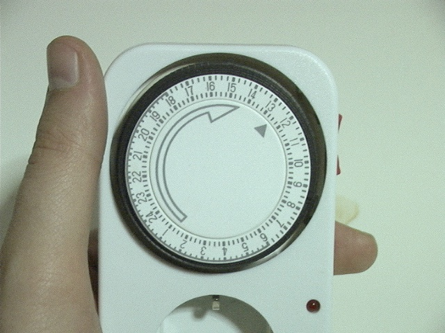

(Zu Rachel's Song von Vangelis)
Meine Bekannte Katrin hat sich eine Zeitschaltuhr zugelegt. Nun ja, da denkt man, diese Dinger gibts ja schon lange, kann ja alles nicht so schwer sein.
:-D
Nach längerer Zeit hat Sie herausgefunden wie der Funktioniert - zu zweit haben wir ihn dann mal im Detail angeschaut.
Schonmal vorweg: Meinen Respekt. Was die alles Falsch gemacht haben, muss man wirklich absichtlich machen, sonst geht das einfach nicht.
Hier erstmal ein Bild

Vielleicht das gute Vorne weg: Es ist klar eine Durchgangssteckdose, wo man was einsteckt ist schon mal einfach.
Nein, mehr positives fällt mir dazu nicht ein. Sorry.
Kommen wir mal zu den Details. Es ist eine Zeitschaltuhr. Völlig unbedarft erwartet man also erst einmal eine Uhr, die schaltet. Und wenn man das Bild betrachtet, dann ist das ja auch schon mal vertraut. Da sind Zahlen und die sind im Kreis angeordnet.
Ach ja, schalten... Das war schon die erste Schwierigkeit - wie schaltet man das gute Stück? Man muss die Schalter (der schwarze Kranz um das "Ziffernblatt" hoch oder herunterdrücken um den Strom zu schalten.
Interessanterweise gibt es auf dem guten Stück aber keinerlei Hinweis welche Stellung ein entspricht! Soweit ich das beurteilen kann scheint aber "herausgezogen" ein zu bedeuten. Sehr intuitiv.
Ach ja, und dann gibt es noch einen roten Schalter auf der Seite. Den haben wir auch nicht verstanden. Jetzt bei der Recherche hier zum Schreiben bin ich auf der Seite von Conrad-Elektronik fündig geworden. Offenbar ist das ein Master-Schalter der die Zeitschaltuhr völlig übergeht. Ist der UNBESCHRIFTETE Schalter also in der falschen Position, funktioniert sowieso gar nix.
Aber falls er zufällig richtig ist ist es trotzdem noch kompliziert - denn welcher der etwa 120 Schalter in dem Aussenring ist für welche Zeit zuständig? Beim Versuch das herauszufinden stößt man schnell darauf das man den äusseren Ring mit den Zahlen - das "Ziffernblatt" sozusagen - drehen kann.
Praktisch. So kann man zum Feststehenden Uhrzeiger die passende Uhrzeit einstellen.
Ich stelle mir das so vor: Damit man nicht völlig verzweifelt, wird man vermutlich die Uhr so einstellen, dass 0/24 Uhr oben ist, und dann stellt man sich einen Wecker, damit man die Uhr zum richtigen Zeitpunkt einsteckt, damit die Uhrzeit die er dann anzeigt zur Tageszeit passt. Und vielleicht betreibt man es vorher dann noch ein paar Stunden damit der Zeiger auf eine passende Stelle zeigt und man nicht um Mitternacht zum Zeitschaltuhr einstecken aufstehen muss.
Sehr komfortabel.
Ach ja, ausserdem stellt man ungefähr zu diesem Zeitpunkt fest, das die Beschriftung auf dem Ziffernblatt in die falsche Richtung ist. Nicht wie bei einer Uhr, nein, nein - natürlich anders herum. Auch wenn einem der Pfeil auf der "Zeiger"-Scheibe eine normale Richtung vorgaukeln möchte. Ach ja, natürlich macht der schon Sinn - denn den "Ziffernblatt"-Ring kann man nämlich ohne große Kraft nur in diese Richtung drehen. Oder soll - damit das einstellen der Uhrzeit noch "leichter" fällt vielleicht?
Der "Zeiger" jedenfalls bewegt sich genau in die andere Richtung.
Fassen wir also mal Zusammen:
- Schalten? An schwarzen Stiften, so etwa 10 min pro Stift, was ein und was aus bedeutet muss man aber durch trial und Error bestimmen
- Es gibt einen unbeschrifteten Schalter, der den ganzen Mechanismus ausser Kraft setzt - Was ein und was aus bedeutet muss man ausprobieren.
- Man dreht nicht die Scheibe mit dem Pfeil darauf, sondern den Ring aussen herum auf dem die Zahlen stehen.
- Damit stellt man die Uhrzeit zu dem feststehenden "Uhrzeiger" ein. Man stellt also nicht den "Uhrzeiger" sondern das "Ziffernblatt"
- Das "Ziffernblatt" ist in die falsche Richtung beschriftet
Eine tolle Uhr ist dass. Ich meine, man hat wirklich das Gefühl das der Konstruktör entweder noch nie eine Uhr in der Hand gehabt hat und daher etwas völlig neues erfinden musste, oder aber das er sich absichtlich überlegt hat, wie er seine Benutzer noch ein bisschen mehr quälen kann.
Wirklich faszinierend.